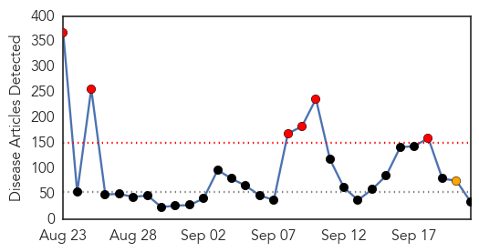
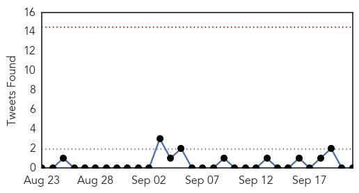
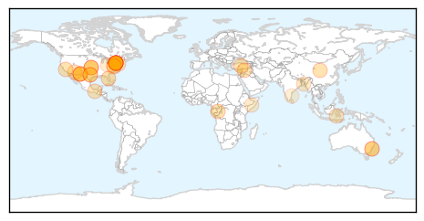
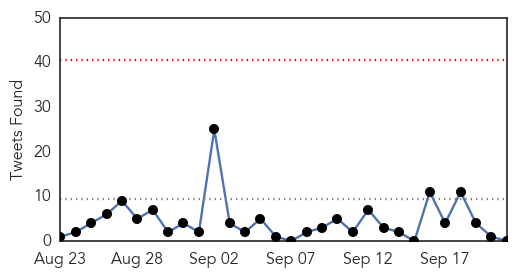
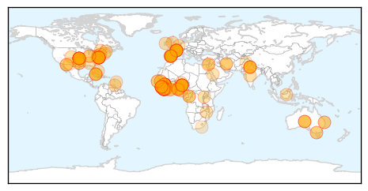
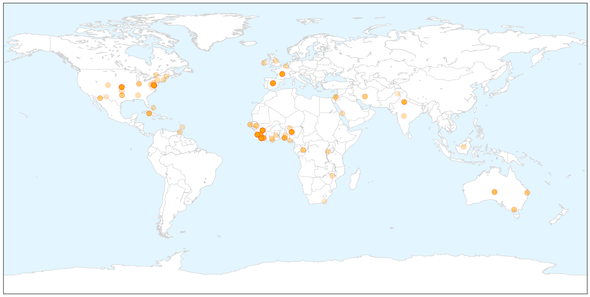
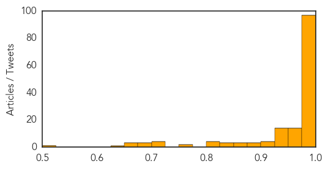

Unknown
30-Day Web Trend
6 alerts, 1 warnings

30-Day Twitter Trend
0 alerts, 0 warnings

Article Locations

Article Confidences

Top Articles:
- 0.982
- Schumer wants better tracking of unusual respiratory illness in NYC
- 0.973
- CDC offers new flu vaccine guidelines
- 0.932
- Congo virus may take epidemic shape in city
- 0.922
- Rabies: The key word is prevention
- 0.917
- Chicago Tribune
- 0.917
- Chicago Tribune
- 0.917
- Chicago Tribune
- 0.917
- Chicago Tribune
- 0.895
- Schumer urges CDC to address virus
- 0.895
- Over 700 Texas Infants Exposed To Tuberculosis At Hospital (VIDEO)
- 0.866
- Protester hold placards during Climate Change March in Berlin
- 0.866
- Children march during a rally against climate change in New York
- 0.866
- A woman holds up a sign that reads "Against Climate Change" during a demonstration in Buenos Aires
- 0.866
- Catholics attend a rally against climate change in New York
- 0.866
- People hold posters during a Climate Change march to demand politicians take tougher action to protect the climate at Angel de la Independencia monument in Mexico City
- 0.866
- A protester flies anti-nuclear energy kites during Climate Change March demanding politicians take tougher action to protect the climate in Berlin
- 0.866
- Russia's Lavrov tells U.S. counterpart
- 0.866
- Residents sit on Medano beach before the possible arrival of Tropical Storm Polo in Cabo San Lucas, after Hurricane Odile hit Baja California
- 0.866
- Protester holds a banner as he participates in a rally called the Climate Change Action March in Sydney
- 0.866
- Protester carries a banner referring to Australian Prime Minister Tony Abbott as he participates in a rally called the Climate Change Action March in Sydney
- 0.856
- How to avoid enterovirus
- 0.829
- More than 700 babies exposed to TB at Texas hospital
- 0.827
- More Than 700 Infants Exposed to TB at El Paso Hospital
- 0.803
- New Haven briefing planned on children’s virus
- 0.769
- 700 babies maybe exposed to TB at Texas hospital
- 0.752
- 90 percent of kids who died last flu season didn't get vaccine, CDC says
- 0.746
- Scrub typhus death reported in Kota district, Rajasthan state
- 0.727
- More than 700 Texas infants exposed to tuberculosis at hospital
- 0.701
- Lyme Activists Target IDSAs IDWeek Conference
- 0.679
- One patient dies every hour at DMCH, road accident a prime cause
- 0.636
- Water shortage hits Somali regions
- 0.580
- Toxic Algae Contaminates Oregon River
- 0.569
- NDRF launches advanced medical facilities to expedite rescue efforts in J-K
- 0.554
- 700 Babies in Texas Potentially Exposed to Tuberculosis
- 0.505
- Awareness on Idiopathic Pulmonary Fibrosis
Top Tweets:
-
No tweets found for Sep 21, 2014
Ebola
30-Day Web Trend
0 alerts, 0 warnings

30-Day Twitter Trend
0 alerts, 0 warnings

Article Locations

X

Article Confidences
Top Articles:
- 1.000
- 500,000 ‘will contract Ebola’
- 1.000
- Ebola: joint UN assessment response team heads to Liberia
- 1.000
- Ebola: joint UN assessment response team heads to Liberia
- 1.000
- Ebola: joint UN assessment response team heads to Liberia
- 1.000
- The most from the coast
- 0.999
- Testimony to the US House Committee on Foreign Affairs
- 0.999
- Cuban Ebola Workers Reassure their Families
- 0.999
- Liberia to Provide 1,000 Ebola Beds in Overwhelmed Capital
- 0.999
- 100 tons of supplies to fight Ebola sent to West Africa
- 0.999
- Israel ups aid to Africa in fight against Ebola
- 0.999
- WHO: Death toll in West Africa Ebola epidemic reaches 2,630
- 0.999
- Sierra Leone Lockdown Declared "Success"
- 0.999
- Ebola could infect up to 500,000
- 0.998
- Israeli NGO sends team to Sierra Leone to help combat Ebola
- 0.998
- Another Spanish missionary doctor with Ebola repatriated
- 0.998
- New Ebola clinics useless without more trained staff
- 0.998
- Risk of 6,800 New Cases This Month
- 0.998
- Sierra Leone's Ebola Lockdown Continues
- 0.998
- Sierra Leone's Ebola Lockdown Continues
- 0.998
- Guinea Health Team Killed
- 0.998
- Clash between residents and workers occurs on day 2 of Sierra Leone curfew
- 0.998
- Ebola also killing West African commerce
- 0.998
- 8 members of Ebola fact-finding mission killed in Guinea
- 0.997
- CDC Sees 500,000 At Risk For Ebola
- 0.997
- Sierra Leone in lockdown amid fears of blowout to 500,000 Ebola infections in West Africa
- 0.997
- Samoa remains low risk for Ebola
- 0.997
- Ebola Virus Outbreak 2014: 3-Day National Lockdown Implemented in Sierra Leone for Ebola Campaign : News : Headlines & Global News
- 0.997
- Sierra Leone's Ebola Lockdown Continues
- 0.997
- Ebola also killing West African commerce
- 0.996
- Israel to up medical assistance to combat Ebola
- 0.996
- Medical Supplies Flood into Sierra Leone During Ebola Quarantine
- 0.996
- Ebola outbreak must be controlled
- 0.996
- Containing Ebola: Better late than never
- 0.996
- Cuba sends doctors to combat Ebola in Africa
- 0.995
- Overwhelmed West Africa ramps up Ebola response
- 0.995
- Overwhelmed west Africa escalates Ebola response
- 0.995
- Ebola crisis: Sierra Leone ends three-day lockdown; dozens more cases identified
- 0.995
- Time running out to stop Ebola
- 0.995
- Untitled Article
- 0.995
- Ebola Weakens Already Fragile Nations
- 0.994
- Sierra Leone shuts down for 3 days
- 0.994
- Overwhelmed west Africa ramps up Ebola response - Sierra Leone
- 0.994
- Israel joins fight against Ebola in Africa - Xinhua
- 0.993
- As Sierra Leone's Ebola lockdown draws to a close, questions remain
- 0.993
- UN to deploy Ebola mission as death toll reaches 2 630:Friday 19 September 2014
- 0.993
- Sierra Leone’s Ebola lockdown ends - Africa
- 0.993
- Sierra Leone on lock down as the country attempts to contain Ebola
- 0.993
- CDC issues new Ebola warning for crews of U.S. airlines
- 0.993
- Nationwide lockdown to fight Ebola in Sierra Leone
- 0.992
- Eerie Photos Capture Sierra Leone's Desperate Attempt to Stop the Spread of Ebola
Showing top 50 articles...
Top Tweets:
-
No tweets found for Sep 21, 2014